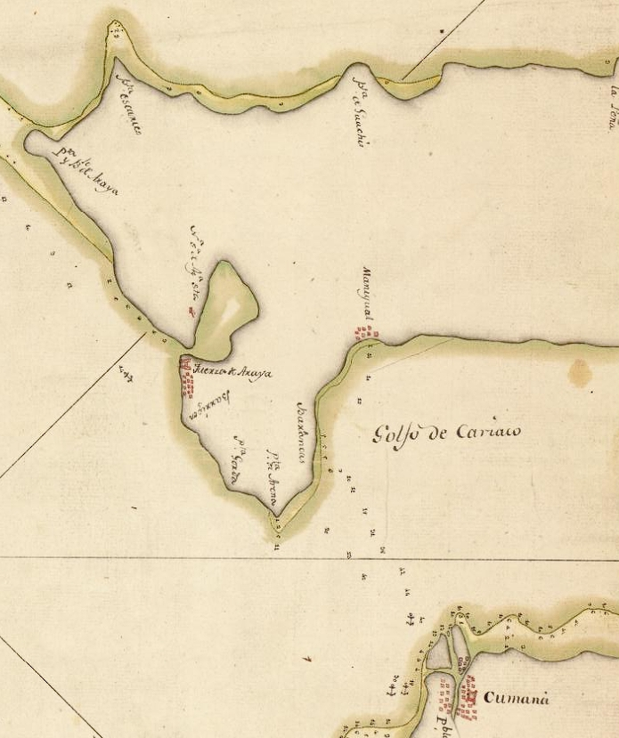

Sección 3.4 Montesinos en el puerto de Cumaná.
No es de extrañar, que al momento de la llegada de la falange marañona a Maracapana, el provincial Montesinos con su barco artillado, se encontrará precisamente en el puerto de Cumaná; sobre este suceso existen las declaraciones ante la Audiencia de Santo Domingo del marañón Álvaro de Acuña, del capitán Diego Hernández (patrón del barco de Montesinos), del contramaestre Canuto González, del lombardero Gaspar Estebes y de Manuel González:
… y luego fr. albaro envio una piragua con yndios y vn hombre de los dhoz diez y seys a dar aviso al padre provincial, el quel vino de ay a tres días con la dicha carabela…. El capitán Diego Hernández el 28/08/61, declara y proporciona interesantes detalles: … estando este to [puerto] en cumana qes en el golfo de cariaco de la prouinçia de maracapana, qes en trra firme siete leguas de la isla de Cubagua, llego vuna piragua con dos cristianos, vuno dellos del pe prouinçial q se llama alo de chaves, e otro q no sabe como se llamaba, eran de lo q abia enviado el dho [dicho] Aguirre, e con ellos ciertos yos [indios] q bogavan la piraguam los qs, venian a dar aviso q venían de maracapana, q los enviava fr. albaro de Castro,… lo dixeron por relaçion los dos hombres blancos, vuno del prouincial, este to [puerto] y el pe prouincial se hizo a la vela con su navio, q estaba en el puerto de cumana, e se fue pa maracapana,… [32].
El provincial Montesinos se encontraba en el puerto de Cumaná, como un puerto base para el aprovisionamiento de insumos; principalmente sal y pescado. Así se desprende de la declaración del contramaestre de su embarcación, cuando en el mismo proceso anterior [32], declara lo siguiente: … sabe que estando en la Punta de Araya llego una piragua con un cristiano del P. Provincial y otro del tirano…. El Provincial volvio a donde estaba Fr. Alvaro que se hallaba a unas 17 leguas; declaración que confirma el testigo del mismo expediente, portugués Manuel González: Estaban en la Araya cargando sal y pescado para llevar a Sto Domingo donde el Provincial quería hazer gente para su jornada en Maracapana, cuando tuvieron noticias de lo sucedido por dos españoles que vinieron en una piragua… Estaban en la Punta de Araya o en el puerto de la salina, solo en forma temporal, por ser un lugar preferente en ese tiempo y ahora para el aprovisionamiento de pescado (antes salado y ahora fresco). Pero como los otros testigos afirman que se encontraba en el puerto de Cumaná, es de suponer que la actividad en la Punta de Araya era una actividad itinerante de pesquería y aprovisionamiento; con estadía en el puerto de Cumaná (tanto por la mano de obra especializada —india—, como por el agua). Desde la Punta de Araya, era imposible que los hombres de Munguía hubieran divisado, el velamen o los mástiles de la imponente carabela del provincial anclada en el puerto de Cumaná.
Francisco de Montesinos, terminó viniéndose con sus hombres (y los marañones que se le sumaron): desde su ranchería en Maracapana a la boca del río Cumaná; y junto con los que allí se encontraban (y los de él que se adelantaron) dio inicio a la Nueva Córdoba; en la proximidad del sitio de la misión fundante de 1515 y de la antigua torre de piedra de Castellón de 1523; así lo verifican las actas del primer Concejo Municipal del poblado fechada el 1 de febrero de 1562. Allí la encontró Diego Fernández de Serpa el 13 de octubre de 1569: Trazose, la iglesia, plaza y calles, para que por su orden todos con ella se acomodasen de alojamiento. Poblose en ocho días La Nueva Córdoba de más de ciento y cincuenta casas cubiertas de caña o pajas, la reedifico y refundó con el nombre de «Ciudad de Santa Inés» de Cumaná; así aparece en las Acta de la Repoblación de la Nueva Córdoba del 24 de noviembre de 1569 [38] y en la relación de su cronista Lope de Las Varillas [75].
La hueste colonizadora de Fernández de Serpa, mucho difiere de las diligencias adelantadas por el fraile Francisco de Montesinos «mitad monje, mitad soldado»; lo del provincial sólo fue una campaña misional armada (vino con barco artillado, curas y soldados), con Serpa prevalecieron los vecinos, agricultures y artesanos. Toda una hueste colonizadora se organiza con prolijidad y detalle; por fortuna para Cumaná, todos sus participantes quedaron registrados en un documento cuyo original reposa en el archivo de Sevilla 1 . Para el Oriente todo, el impulso y revitalización, fue la principal consecuencia del paso meteórico del tirano peregrino. También quedó como relicto y monolito, un topónimo a la entrada de la ensenada de Mochima: «La Punta Aguirre»; denominación que parece ser de reciente adjudicación, ya que no aparece en los prolijos trabajos de Francisco Fidalgo de finales de 1793; ni en ningún mapa o portulano anterior.
En 1579, la provincia de Cumaná tiene por constancia del reclamo un gobernador titular: Garci Fernández de Serpa (hijo de Diego Fernández de Serpa), quien la hereda en base a la Capitulación obtenida por su padre (por dos vidas). Al heredero, tanto como a su padre, pronto lo engulle la ensoñación dorada del siglo, desaparece hacia el sur de Paria sin dejar rastros; su padre había muerto cerca de la quebrada de Jose en 1570 intentando lo mismo (por la ruta de Ortal). Ellos como otros siguieron los sueños dorados de Pedro de Ursúa Navarro y se desvanecienron en las páginas de historia; ninguno pudo recorrer camino parecido al de Lope de Aguirre y sus marañones.
Luego de la muerte del hijo de Serpa, queda al mando de la gobernación de la provinicia de Cumaná, su Teniente de Gobernador; el gobernador accidental Pedro García Camacho.
Pedro García Camacho acompañó a los Serpa desde Cartagena de Indias, pero antes había servido en la tropa de Diego de Lozada y por ello fue corregidor en Caracas; los hechos indican —y es muy probable—, que también fuese un marañón; su actividad entre Cumaná y Cumanacóa está bien documentada. En el 2015, el autor identificó qué: El 1 de enero de 1583, el gobernador Pedro García Camacho, le notifica a la Real Audiencia de Santo Domingo, que había mudado la ciudad de Cumaná, a un sitio más propicio y generoso para la seguridad y prosperidad de la ciudad; remontando el río media legua al sitio donde al presente está 2 .

[ Fuente].